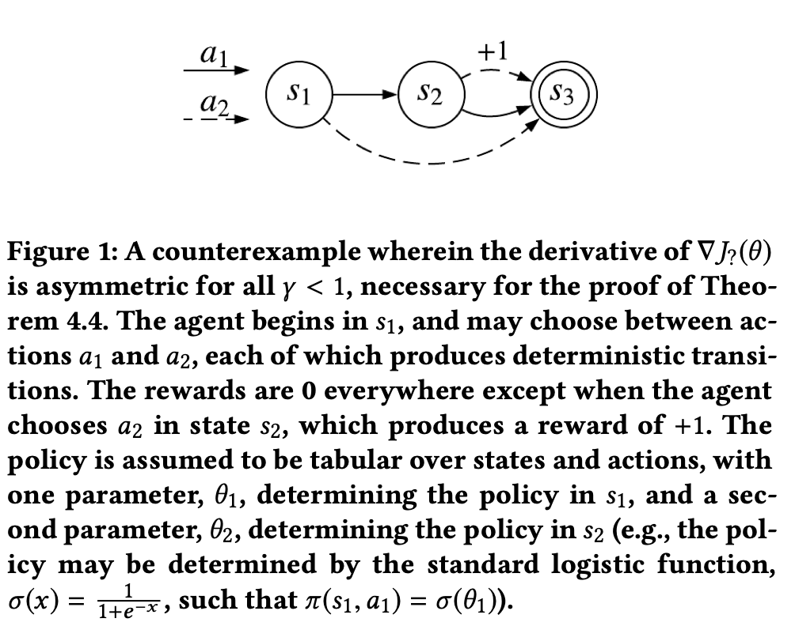
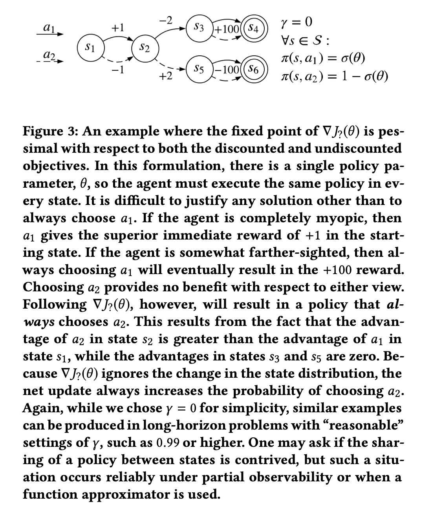

Is the Policy Gradient a Gradient ?
Introduction
Policy gradient theorem is the cornerstone of policy gradient methods, and in the last post, I presented the proof of policy gradient therorem, which describes the gradient of the discounted objective w.r.t. policy parameters. But in actual computation, most policy gradient methods drop the discount factor from the state distribution, and hence it does not actually optimize the discounted objective ($J(\theta)$). A recent work by Nota and Thomas answers the following mysteries:
- What do these policy gradient algorithms optimize instead?
- Whether these algorithms are unbiased w.r.t. a reasonable, related objective?
Notations and Problem Statement
An MDP is a tuple, $(\mathcal{S},\mathcal{A},P,R,d_{0},\gamma)$. $d_{0}:\mathcal{S}\rightarrow [0,1]$ be the initial state distribution; $P:\mathcal{S}\times \mathcal{A}\times \mathcal{S}\rightarrow [0,1]$ be the transition function of MDP; $R:\mathcal{S}\times\mathcal{A}\rightarrow $ be the expected reward from taking an action in a particular state; $\gamma\in [0,1]$ be the discount factor;
Let $\pi_{\theta};Q^{\theta}_{\gamma}(s,a);V^{\theta}_{\gamma}(s,a);A^{\theta}_{\gamma}(s,a)$ respectively be the parametrized policy; action-value function; state-value function; advantage function.
In episodic setting, there are two commonly used objectives, Discounted objective:
\begin{array}{l} J_{\gamma}(\theta) = \mathbb{E}[\sum_{t=0}^{\infty}\gamma^{t}R_{t}|\theta] \end{array}
Undiscounted objective:
\begin{array}{l} J(\theta) = \mathbb{E}[\sum_{t=0}^{\infty}R_{t}|\theta] \end{array}
The policy gradient theorem gave the gradient of discounted objective :
\begin{array}{l} \nabla J_{\gamma}(\theta) = \mathbb{E}[\sum_{t=0}^{\infty} \gamma^{t}\Phi^{\theta}(S_{t},A_{t})Q_{\gamma}^{\theta}(S_{t},A_{t})|\theta] \end{array}
where $\Phi^{\theta} = \frac{\partial}{\partial \theta}log\;\pi^{\theta}(s,a)$ is the compatible feature.
However, instead of using $\nabla J_{\gamma}(\theta)$, most policy gradient algorithms directly or indirectly estimate this expression:
\begin{array}{l} \nabla J_{?}(\theta) = \mathbb{E}[\sum_{t=0}^{\infty} \Phi^{\theta}(S_{t},A_{t})Q_{\gamma}^{\theta}(S_{t},A_{t})|\theta] \end{array}
and update $\pi_{\theta}$ towards this direction. Note that $Q_{\gamma}^{\theta}=\mathbb{E}[\sum_{k=0}^{\infty}\gamma^{k}R_{t+k}|S_{t}=s, A_{t}=a, \theta]$ is associated with $\gamma$, and here $J_{?}(\theta)$ only drops the ourter discount factor. It's an open question that whether $J_{?}(\theta)$ is a gradient of some reasonable objective function.
What is $\nabla J_{?}(\theta)$ actually?
It can be shown by proof of contradiction that $\nabla J_{?}(\theta)$ is not gradient of any function.
If $f:\mathbb{R}^{n}\rightarrow \mathbb{R}$ exists and is continuously twice differentiable in some neighborhood of the point $(a_{1},a_{2},...,a_{n})$, then its second derivative is symmetric, i.e., $\frac{\partial f(a_{1},a_{2},...,a_{n})}{\partial x_{i}\partial x_{j}} = \frac{\partial f(a_{1},a_{2},...,a_{n})}{\partial x_{j}\partial x_{i}}\;\;\forall i,j$
This is the well-known Clairaut-Schwarz theorem. And obviously, the contrapositive of it is :
If at some point $(a_{1},a_{2},...,a_{n})\in \mathbb{R}^{n}$ there exist an $i$ and $j$ such that $\frac{\partial f(a_{1},a_{2},...,a_{n})}{\partial x_{i}\partial x_{j}}\neq \frac{\partial f(a_{1},a_{2},...,a_{n})}{\partial x_{j}\partial x_{i}}$, then $f$ does not exist or is not continuously twice differential in any neighborhood of $(a_{1},a_{2},...,a_{n})$.
Ideally, if we can find a counter example s.t. $\nabla^{2}J_{?}(\theta)$ is continous and asymmetric, then $J_{?}$ does not exist. First, rewrite $J_{?}$ in a new form :
Let $d_{\gamma}^{\theta}$ be the unnormalized, weighted state-distribution given by \(\begin{array}{l} d_{\gamma}^{\theta}(s) := d_{0}(s) + (1-\gamma)\sum_{t=1}^{\infty} Pr[S_{t} = s|\theta]. \end{array}\) Then \(\begin{array}{l} \nabla J_{?}(\theta) = \sum_{s\in\mathcal{S}}d_{\gamma}^{\theta}(s)\frac{\partial}{\partial\theta}V_{\gamma}^{\theta}(s). \end{array}\)
Note that the 1st order derivative does not consider the update effect on state distribution. And this is the source of asymmetry of $\nabla^{2}J_{?}(\theta)$.
Then the gradient $\frac{\partial^{2}J_{?}(\theta)}{\partial\theta_{i}\partial\theta_{j}}$ can be written as :
\begin{array}{l} \frac{\partial^{2}J_{?}(\theta)}{\partial\theta_{i}\partial\theta_{j}} = \frac{\partial}{\partial\theta_{i}}\left(\sum_{s\in\mathcal{S}}d_{\gamma}^{\theta}(s)\frac{\partial}{\partial\theta_{j}}V_{\gamma}^{\theta}(s)\right)\\ = \sum_{s\in\mathcal{S}}\frac{\partial}{\partial\theta_{i}}d_{\gamma}^{\theta}(s)\frac{\partial}{\partial\theta_{j}}V_{\gamma}^{\theta}(s)+\sum_{s\in\mathcal{S}}d_{\gamma}^{\theta}(s)\frac{\partial^{2}}{\partial\theta_{i}\partial\theta_{j}}V_{\gamma}^{\theta}(s) \end{array}
The first term is asymmetric.
By a counterexample, we can intuitively see the asymmetricity and continuity of $\nabla^{2}J_{?}(\theta)$, and hence $J_{?}$ does not exist.

As shown in the above figure, since only the state-action pair $(s_{2},a_{2})$ can get reward 1 and taking $a_{2}$ on state $s_{1}$ will transit into $s_{3}$, $\theta_{1}$ affects both the value function and the state distribution, however, $\theta_{2}$ only affect the value function, not the state distribution. Hence if $\gamma < 1$, the first term in $\frac{\partial^{2}J_{?}(\theta)}{\partial\theta_{1}\partial\theta_{2}}$ is not zero, but the first term in $\frac{\partial^{2}J_{?}(\theta)}{\partial\theta_{2}\partial\theta_{1}}$ is 0, and the second terms are equal.
Does $\nabla J_{?}(\theta)$ converge to a reasonable policy?
Although $\nabla J_{?}(\theta)$ is not the gradient of any function for $\gamma <1$, it's still possible that by updating $\theta$ towards the direction of $\nabla J_{?}(\theta)$, it finally converges to a reasonable policy. (e.g., TD fixed point)
We set a low bar for so-called 'reasonable policy' : Any reasonable policy fixed point should at least surpass the pessimal policy under either the discounted or undiscounted objective.
Unfortunately, $J_{?}(\theta)$ even fails to pass this low bar.

As shown in Figure 2, this MDP achieves better discounted/undiscounted reward by always selecting action $a_{1}$. But since $\nabla J_{?}(\theta)$ ignores the change in the state distribution and $\nabla J_{?}(\theta)$ does not include the outer $\gamma^{t}$ ($\nabla J_{?}(\theta) = \sum_{s\in\mathcal{S}}d_{\gamma}^{\theta}(s)\frac{\partial}{\partial\theta}V_{\gamma}^{\theta}(s)$), and the advantage of $a_{1}$ in $s_{1}$ is 2, the advantage of $a_{2}$ in $s_{2}$ is 4, and the advantage of $a_{2}$ in $s_{3}$ or $s_{5}$ is 0; Hence following $\nabla J_{?}(\theta)$ will result in always choosing $a_{2}$.
This work reviewed several impactful policy gradient algorithm works, and pointed out that all of them use $\nabla J_{?}(\theta)$; Only one paper noticed that $\nabla J_{?}(\theta)$ is a biased estimator; Some papers even made misleading claims in that they presented $\nabla J_{\gamma}(\theta)$ while use $\nabla J_{?}(\theta)$ in the algorithms.
Reflections and Further Topics
After reading this work, I had a discussion with Alan Chan, Eric Graves, and Alex Lewandowski. Here're some opionions we all agreed on.
'Not being a gradient' may not be harmful by itself, but what's the actual reason for efficiency of those policy gradient algorithms is a valuable open question. We obviously lack understanding of what an update actual does (if the update direction is not a gradient or something), and the contradiction that 'people actually care about undiscounted objective' and 'to limit the update size, algorithms use discounted objective' might be a core reason for the inconsistency of the theory and empirical performance.
There're several related further topics that we would like to keep an eye on:
1. Objective function : What's a reasonable and coherent onjective funtion ? If we still try to maximize the undiscounted objective while using discounted objective in the algorithmic level, is it a good idea to tune the discount factor and empirically maximize the undiscounted objective? Is there any other general way ?
2. Update Rules : As the paper 'Implementation Matters in Deep RL: A Case Study on PPO and TRPO' pointed out, we don't understand how the parts comprising deep RL algorithms impact agent training, we need a more precise studying on the update rules.
3. What is a 'principled' state distribution to learn with? Reference
Chris Nota, Philip S. Thomas. Is the Policy Gradient a Gradient? arXiv preprint arXiv:1906.07073, 2019.
Logan Engstrom, Andrew Ilyas, Shibani Santurkar, Dimitris Tsipras, Firdaus Janoos, Larry Rudolph, Aleksander Madry. Implementation Matters in Deep RL: A Case Study on PPO and TRPO. https://openreview.net/forum?id=r1etN1rtPB.